Shoot and Digitize Pictures
Source Photographs
How did you capture your image sets?
Describe the scenes, camera or phone, and how you kept the center of projection fixed while rotating. State the overlap and any resizing. Identify which photos you took and credit any other sources.
[Write your answer here.]

proj4/images/mosaic1_left.jpg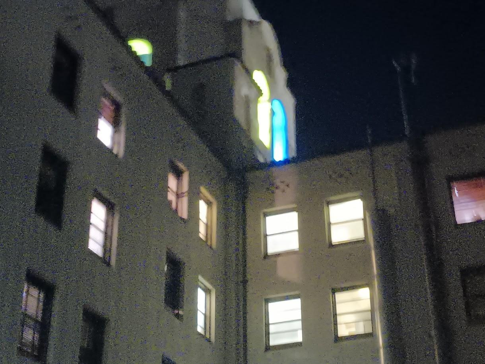
proj4/images/mosaic1_right.jpgImage set 1: scene and capture notes
Name the location or subject. Explain what overlaps and any movement, lighting change, or lens distortion that could affect alignment.
[Write your answer here.]

proj4/images/mosaic2_left.jpg
proj4/images/mosaic2_right.jpgImage set 2: scene and capture notes
Name the location or subject. Explain what overlaps and any movement, lighting change, or lens distortion that could affect alignment.
[Write your answer here.]
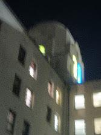
proj4/images/mosaic3_left.jpg
proj4/images/mosaic3_right.jpgImage set 3: scene and capture notes
Name the location or subject. Explain what overlaps and any movement, lighting change, or lens distortion that could affect alignment.
[Write your answer here.]
Recover Homographies
Point Matches & Geometry
How did you choose correspondences?
Describe your point-selection tool, the number of matches per pair, and how you distributed distinctive points across the overlap. Explain why more than four correspondences help.
[Write your answer here.]
Set up your system of equations
Show the two equations contributed by one (x, y) ↔ (u, v) match, define the eight unknowns, and write the stacked Ah = b system. Explain how you solved the overdetermined system and any normalization used.
[Write your answer here.]
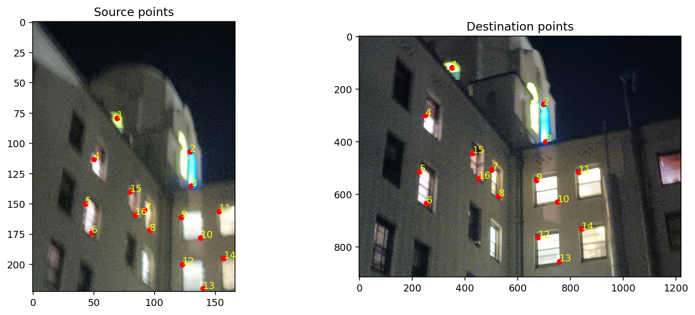
proj4/results/mosaic1_points.pngMosaic 1: recovered homography
Paste your actual 3 × 3 matrix. Specify which image maps to which reference, the coordinate convention, the number of matches, and any measured reprojection error. Generated matrices are in the corresponding results JSON file.
[Write your answer here.]
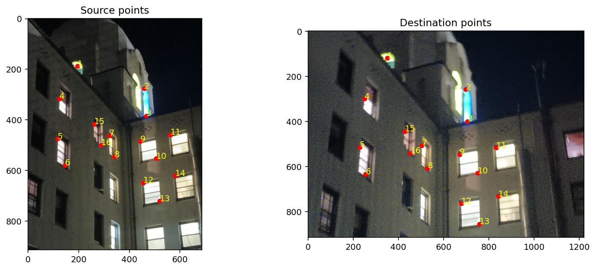
proj4/results/mosaic2_points.pngMosaic 2: recovered homography
Paste your actual 3 × 3 matrix. Specify which image maps to which reference, the coordinate convention, the number of matches, and any measured reprojection error. Generated matrices are in the corresponding results JSON file.
[Write your answer here.]
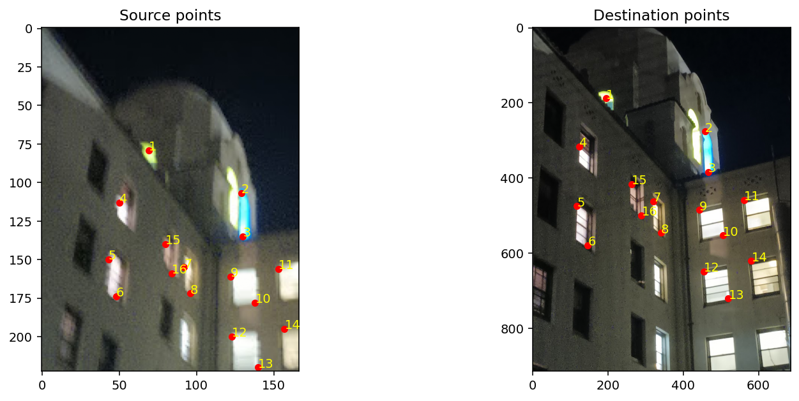
proj4/results/mosaic3_points.pngMosaic 3: recovered homography
Paste your actual 3 × 3 matrix. Specify which image maps to which reference, the coordinate convention, the number of matches, and any measured reprojection error. Generated matrices are in the corresponding results JSON file.
[Write your answer here.]
Warp and Rectify Images
Inverse Warping
How does your inverse warp work?
Explain how you find output bounds from transformed corners, handle the canvas offset, map output pixels back to the input, and mask invalid samples. State your convention for pixel centers.
[Write your answer here.]
How did you implement both interpolation methods?
Describe nearest neighbor and derive the four bilinear weights from the fractional source coordinates. Explain your treatment of border pixels. Refer to warpImageNearestNeighbor(im, H) and warpImageBilinear(im, H).
[Write your answer here.]

proj4/images/rectification1.jpg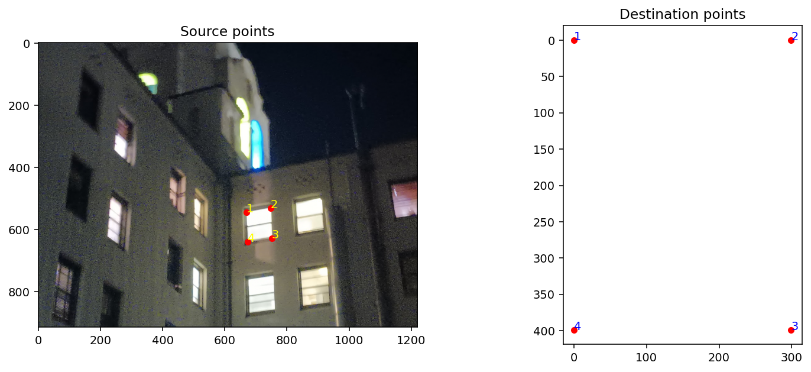
proj4/results/rectification1_points.png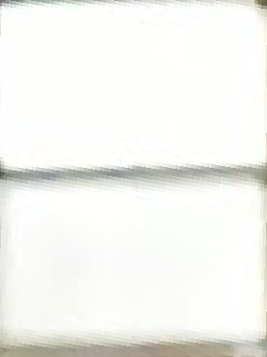
proj4/results/rectification1_nearest.pngproj4/results/rectification1_bilinear.pngRectification 1: geometry and result
Identify the planar rectangular object. Give your source and destination coordinates, explain the known aspect ratio, and describe whether lines and proportions look correct. Compare nearest neighbor and bilinear detail in this example.
[Write your answer here.]
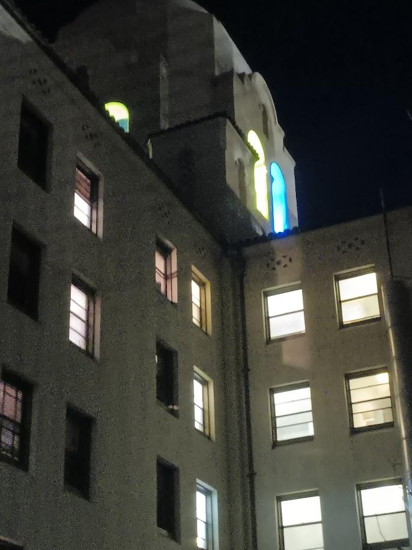
proj4/images/rectification2.jpg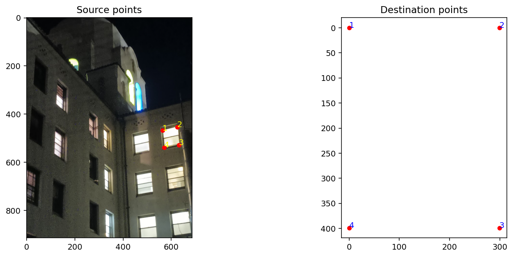
proj4/results/rectification2_points.png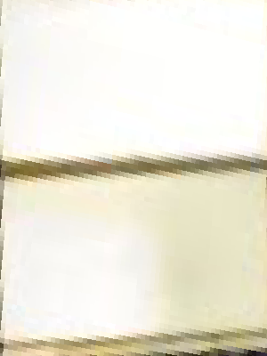
proj4/results/rectification2_nearest.png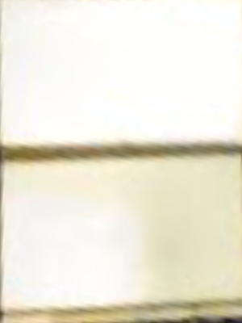
proj4/results/rectification2_bilinear.pngRectification 2: geometry and result
Identify the planar rectangular object. Give your source and destination coordinates, explain the known aspect ratio, and describe whether lines and proportions look correct. Compare nearest neighbor and bilinear detail in this example.
[Write your answer here.]
| Example | Output size (px) | Nearest neighbor (s) | Bilinear (s) |
|---|---|---|---|
| Rectification 1 | [Add size] | [Add time] | [Add time] |
| Rectification 2 | [Add size] | [Add time] | [Add time] |
What are the speed and quality trade-offs?
Use your measured runtimes and actual results. Compare jagged edges, smoothness, and blur; explain when you would choose each interpolation method. State the image sizes and what your timing includes.
[Write your answer here.]
Blend Images into a Mosaic
Image Mosaics
How did you build and blend the mosaics?
Explain your choice of reference, shared output canvas, transformation of each source, alpha or feathering weights, and weighted-average formula. Explain how you handle non-overlap and avoid hard overwrite seams.
[Write your answer here.]
proj4/images/mosaic1_left.jpgproj4/images/mosaic1_right.jpg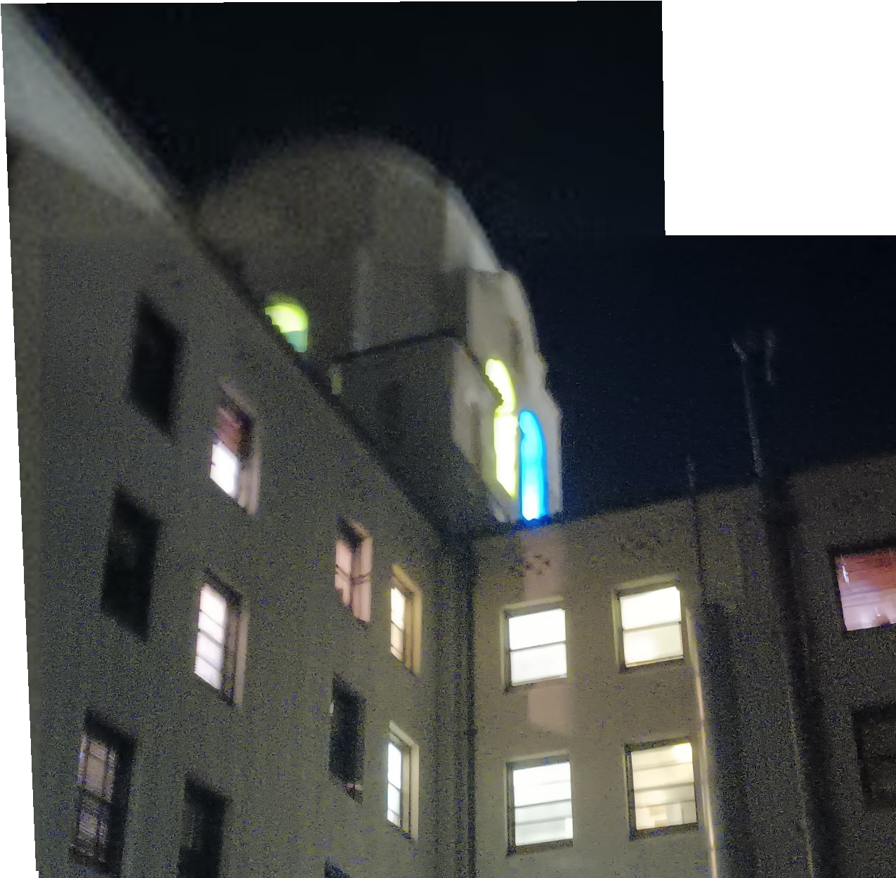
proj4/results/mosaic1_mosaic.pngMosaic 1: evaluate your result
Describe the scene and alignment quality. Point out any visible seams, ghosting, exposure mismatch, or parallax. Explain how blending helped and what you would improve.
[Write your answer here.]
proj4/images/mosaic2_left.jpg
proj4/images/mosaic2_right.jpg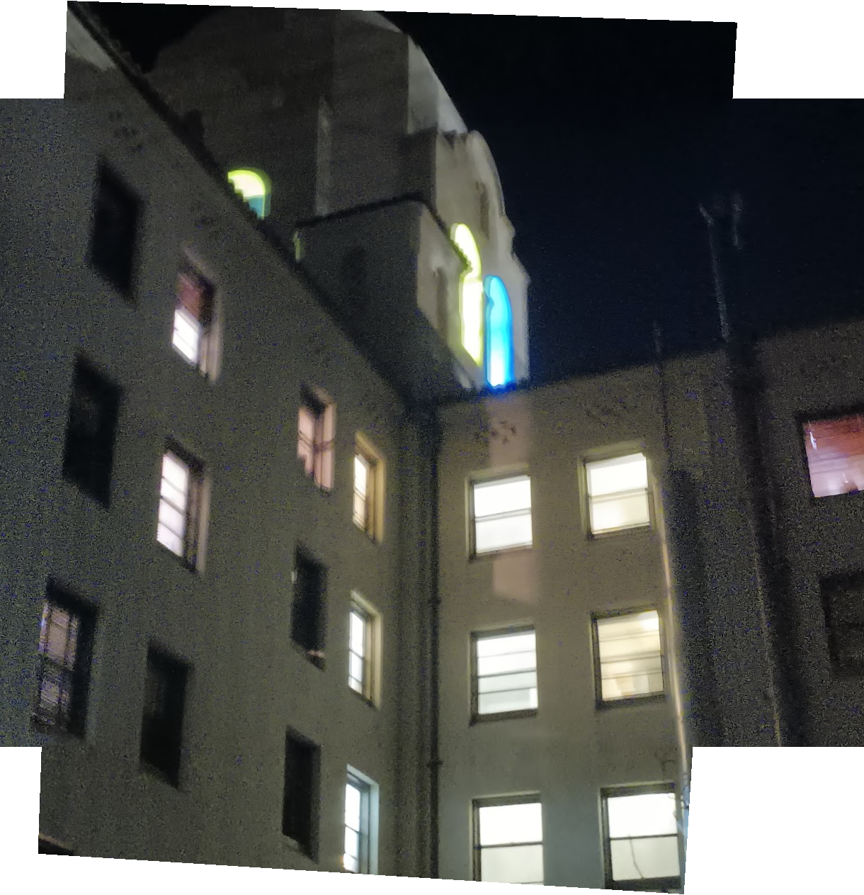
proj4/results/mosaic2_mosaic.pngMosaic 2: evaluate your result
Describe the scene and alignment quality. Point out any visible seams, ghosting, exposure mismatch, or parallax. Explain how blending helped and what you would improve.
[Write your answer here.]
proj4/images/mosaic3_left.jpg
proj4/images/mosaic3_right.jpg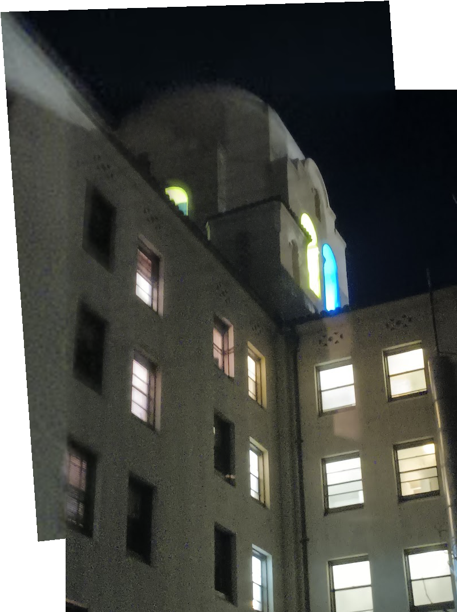
proj4/results/mosaic3_mosaic.pngMosaic 3: evaluate your result
Describe the scene and alignment quality. Point out any visible seams, ghosting, exposure mismatch, or parallax. Explain how blending helped and what you would improve.
[Write your answer here.]
Bells and Whistles
Extension
Required for CS280A; optional for CS180. Complete this section if you implement an extension.
Did you implement an extension?
If applicable, explain your spherical, cylindrical, polar, or other extension, its parameters, and how you sample from the original images. Add your result below and compare it with the planar mosaic. Otherwise state that you did not complete an extension.
[Write your answer here.]
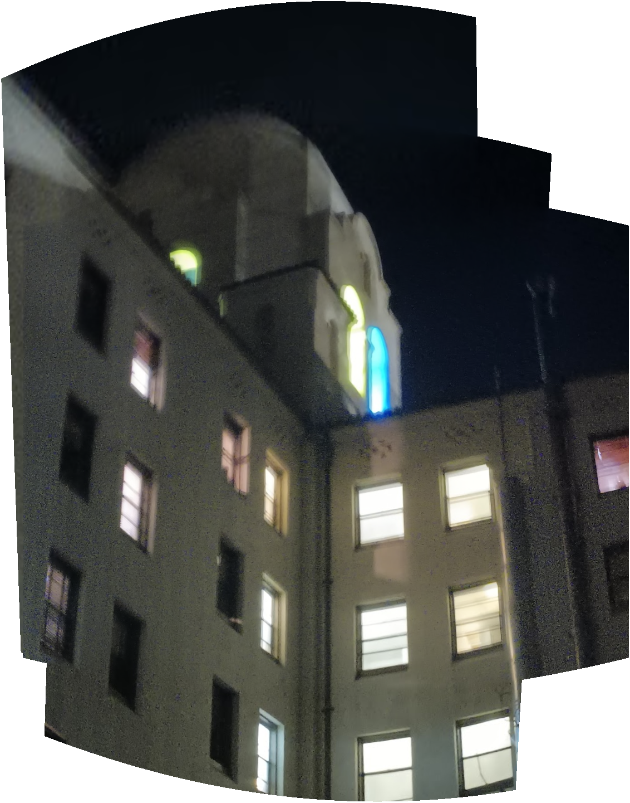
proj4/results/extension.pngWhat I Learned
What did you learn from this project?
Reflect on homography estimation, choosing good point matches, interpolation, and blending. Describe a challenge you encountered and what changed your understanding.
[Write your answer here.]